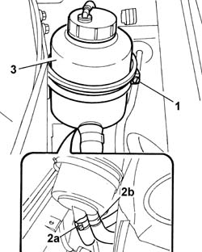

4130B10 POWER ASSISTED STEERING FLUID RESERVOIR - R.R. - Includes bleeding air
- Path
- Procedures > 41 STEERING > 4130 POWER ASSISTED STEERING > 4130B POWER STEERING HYDRAULIC SYSTEM > 4130B10 POWER ASSISTED STEERING FLUID RESERVOIR - R.R. - Includes bleeding air
- Kind
- repair procedure (removal / refitting; the operation number is the code)
- Applies to
- all engines; all production periods
- Interactive page
- https://sloeber94.github.io/elrnDB-lThss/en/#/78773
Applies to: all engines; all production periods
 Removing
Removing
 Refitting
Refitting- Disconnect the negative battery terminal.
See in Op. 7040D50 ENGINE COMPARTMENT UPPER SOUND INSULATION SHIELD - R.R.
See in Op. 5050B34 WINDSCREEN WIPER ARM(S) for front windscreen wiper complete with blade
See in Op. 7055A18 Winsdcreen base TRIM - R.R.
1. Working on the retaining band, release the reservoir from the mounting bracket.
- Seal the air breather pipe on the cap.
2. Turn the power assisted steering fluid reservoir over and disconnect the pipes (2a) and (2b) sealing them to prevent the fluid from escaping.
3. Remove the power assisted steering fluid reservoir keeping it turned upside down and drain the fluid into a suitable container.
- Thoroughly clean any fluid that comes out of the pipes and the reservoir from the bodywork.

Applies to: all engines; all production periods
Refitting
Removing- Fit the power assisted steering fluid reservoir and connect the two pipes to it.
- Fasten the power assisted steering fluid reservoir to the bracket using the band.
- Refill the power assisted steering system using the appropriate fluid.
 | Description | Qty. | Component | Type | Classification |
|---|---|---|---|---|---|
. | TUTELA HP 20 | - | - | Oil | Circuito servosterzo |
- Continue with the bleeding procedure following the instructions given below.
- With the front wheels raised off the ground and the engine switched off, carry out 4 or 5 complete rotations of the steering wheel (left and right).
- Check and, if necessary, top up the power assisted steering fluid level.
- Position the vehicle on the ground and start up the engine.
- Carry out 4 or 5 complete rotations of the steering wheel (left and right).
- If necessary, top up the power assisted steering fluid level.
See in Op. 7055A18 Winsdcreen base TRIM - R.R.
See in Op. 5050B34 WINDSCREEN WIPER ARM(S) for front windscreen wiper complete with blade
See in Op. 7040D50 ENGINE COMPARTMENT UPPER SOUND INSULATION SHIELD - R.R.
Topics linked from this page (3)
- 5050B34 WINDSCREEN WIPER ARM(S) for front windscreen wiper complete with blade
- 7040D50 ENGINE COMPARTMENT UPPER SOUND INSULATION SHIELD - R.R.
- 7055A18 Winsdcreen base TRIM - R.R.
Topics that link to this page (4)
- 4130B34 Supply PIPE from fluid RESERVOIR to POWER ASSISTED STEERING PUMP - R.R. Includes bleeding air
- 4130B36 Rubber supply PIPE from RESERVOIR to RIGID PIPE for power assisted steering pump - R.R. includes bleeding air
- 4130B82 Rubber PIPE from rigid return pipe to fluid reservoir - Includes bleeding air
- 5505C26 ENGINE COMPARTMENT built in wiring - R.R.